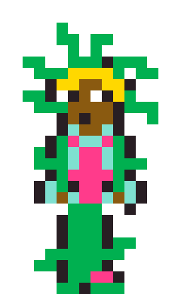
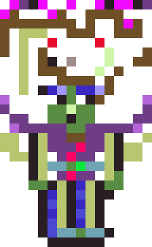
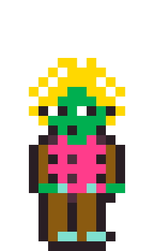
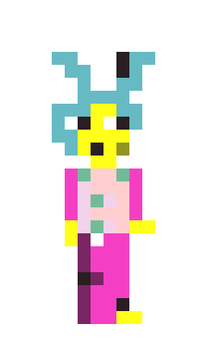

Charles Talbot
portrait of the artist as a young man
Software engineer with a former life as a ceramic artist. These days I split my time between web development and building small generative-art tools — most recently Sprite Forge, a pixel hero generator that runs entirely in the browser.
SPRITE FORGE
Active projectA pixel-art hero generator and editor that runs entirely in the browser. Roll a random character from fifteen body types, then paint over it by hand — pencil, fill, mirror painting, undo/redo. Generate a full pose sheet (front, back, side, run, jump) from whatever's on the canvas, export sprite sheets, and keep a gallery of saved designs. No build step, no install — it's a handful of static files.
- Fifteen body-type presets across three colour palettes, including a C64-inspired terminal palette
- A pose sheet that reads colour straight off your edited canvas, not a frozen palette
- A growing cast of hand-designed bosses and NPCs, catalogued alongside the tool itself




History
Mostly bootcamp- and early-career-era projects, kept here for the record rather than as current work.
Experience
Built responsive web applications for higher-education courses. Took a leadership role running a weekly engineering tech talk.
A full-time front-to-back web development program: learned core CS fundamentals and front-end technologies, and built and deployed three full web applications.
Taught undergraduate and graduate students material and sculptural concepts in a collaborative studio environment.
Produced exhibitions for the Philadelphia Clay Art Center, managed studio and collection logistics for an international artist's practice, and handled museum correspondence, including with the Okinawa Prefectural Museum.